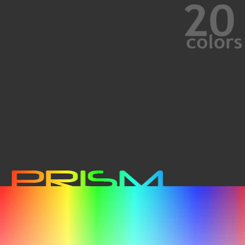

"20colors" is the alias I use for any and all audio-related production I do with my free time. I chose the name because I felt, first off, that it represented the variety of genres I tend to pursue in my music. I chose the number "20" in particular because, just as "12" is reffered to as a "dozen", "20" is also known as a "score". "Score" also refers to the paper on which a musical piece is written. Get it?
UNTITLED SONG FRAGMENT (MP3) - I found this song on my computer the other day. Should I develop it further?
|
MOST RECENT SINGLE - SEVEN FOOT SHAWTY (MP3) A song I wrote about my imaginary 7 foot girlfriend. Enjoy. I do have a bit of an alterior motive for writing this song - when I first learned that 'shawty' meant 'woman' I was a bit... appalled is too strong a word... maybe just preturbed? Well, anyway; this is my shout out to the hip-hop community. Not all women are short. | ||
|
I feel this is about the best I can do given my current circumstances. Expect more Metallurgies in the future. |
||
|
FLYING MAN - Music Video Final project for my high school film class. There was barely enough time to finish this; we were given five minutes to drag and drop the entire solo section! Expect me to redo this as soon as the resources become available to me, it desperately needs to be done. |
PRISM was the first album which 20colors "released". I attempted to sell the work, but I've decided that the methods through which I can currently record music aren't sufficient for sale. Therefore it is available for free download here; having lost money trying to sell physical copies, I'd rather allow the music to be heard this way. I'd eventually like to re-record the entire album at some point when the technology is available to me... yet another project for the future.
Just right-click on the link and choose "Save Link As" to download.
|  |